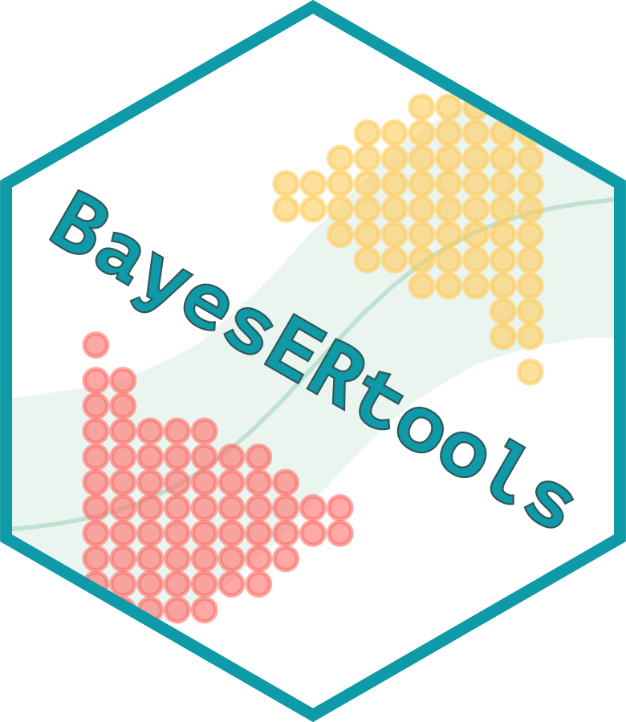

Combine ER plot components
combine_er_components.RdCombine ER plot components
Usage
combine_er_components(
components,
heights = NULL,
add_caption = !is.null(components$caption),
...
)Arguments
- components
An object of class
er_plot_componentsreturned byplot_er()orplot_er_gof()withreturn_components = TRUEoroptions_orig_data = list(return_components = TRUE).- heights
Numeric vector of length 2 specifying the relative heights of the main plot and boxplot. If
NULL(default), uses the height from the metadata (based onboxplot_heightparameter).- add_caption
Logical, whether to add the caption to the combined plot. Default is
TRUEif caption is available.- ...
Additional arguments passed to
patchwork::wrap_plots().
Examples
if (FALSE) { # \dontrun{
# Get components
comps <- plot_er_gof(ermod_bin, return_components = TRUE)
# Modify components
comps$main <- comps$main + labs(title = "Custom Title")
# Recombine
combine_er_components(comps)
} # }